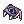

📘 Introdução & Mecânicas
O Mestre Estelar é uma classe expandida muito versátil que possui um burst de dano tremendo,
podendo usufruir da mecânica de overkill
(25% de drop em hit kill) em conteúdos end-game.
Embora muito forte, não recomendo o mesmo para ser seu primeiro personagem,
devido à sua complexidade de jogabilidade, falta de equipamentos e sustain (quando você perceber, não terá mais SP).
🔼 Pontos Fortes
• Escala muito bem graças aos buffs do milagre, união e outros da classe não sendo necessário gears end-game para ter um bom desempenho.
• Classe extremamente móvel graças ao  Chute Aéreo.
Chute Aéreo.
• Kit de habilidades muito completo, excelente para farmar conteúdos end-game ou Instâncias como
 Vila Poring ou
Vila Poring ou
 Caverna do Polvo.
Caverna do Polvo.
🔻 Pontos Fracos
• Forte dependência de recarga (1s) para causar dano consistente.
• Alto consumo de sustain (xaropes, itens de drain como
rideword).
• Ideal ter um dual para se auto-linkar.
• Se tomar dispell, it's over. 💀
Habilidades importantes
Abaixo, algumas das habilidades das quais serão mais utilizadas em sua jogatina.
Nas seções de 📜 Habilidades,
📊 Atributos e 🛠️ Builds e Progressão,
falarei mais sobre, com detalhes.
 Eclipse Lunar
Eclipse Lunar

Habilidade inicial do combo, assim que utilizada, permite o uso de Chute Lunar.
 Chute Lunar
Chute Lunar

Habilidade principal causadora do dano na build.
Espírito do Mestre Taekwon

Importante skill utilizada pelos Linkers, para poder utilizar União Solar, Lunar e Estelar.
 União Solar, Lunar e Estelar
União Solar, Lunar e Estelar

Efeitos da União:
• Cura recebida -75%.
• Aumento da velocidade de movimento ao flutuar do chão.
• Ataques físicos ignoram a esquiva do alvo.
• Ataques físicos sempre serão críticos.
• Regeneração natural de HP e SP -100%.
• Ao realizar ataques físicos contra monstros, cada ataque drenará 2% do seu HP.